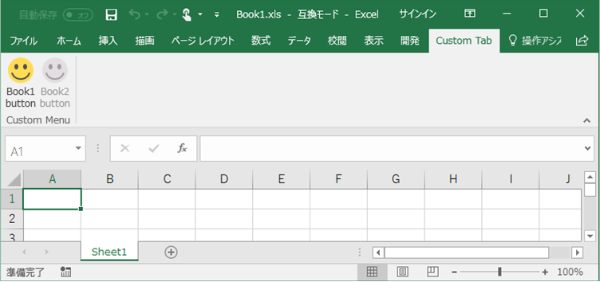
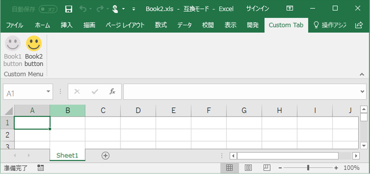
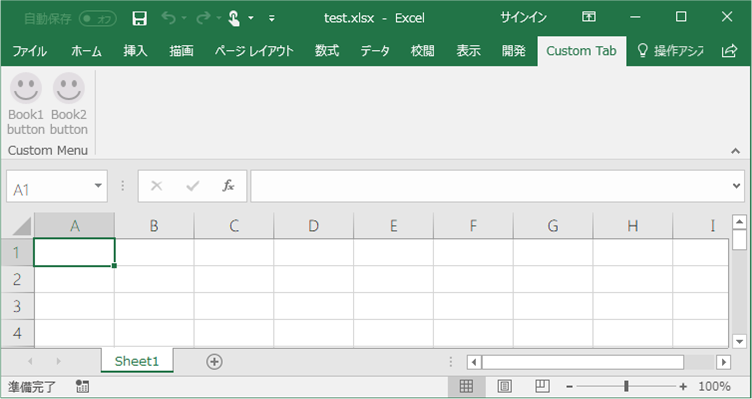

(※ 2017 年 11 月 9 日に Japan Office Developer Support Blog に公開した情報のアーカイブです。)
こんにちは、Office 開発サポート チームの中村です。
今回の記事では、前回の投稿に引き続き、リボン カスタマイズ方法の例をご紹介します。
以前の投稿で紹介した方法で、リボンのカスタマイズがファイル単位でできることはお伝えしましたが、以下のような状況の開発者の方もいるのではないでしょうか。
・アドインとして提供する 1 つのプログラムから、ファイルによってリボンの内容を変えたい (ファイルにカスタマイズを組み込みたくない)
・Office 97-2003 形式 (.xls 等) のファイルにリボン カスタマイズを行いたい
・ブック内での操作に応じて動的にリボンの状態を変えたい
これらの要望は、Office 2007 形式のアドイン (.xlam 等)、または VSTO カスタマイズで実現できますので、以下に具体例を用いて紹介します。Excel のカスタマイズを行われることが多いので、(これまでの記事を含め) 以下はすべて Excel を例に説明していますが、他の Office アプリケーションでも利用できます。
目次
1. .xls 形式のファイルのリボン カスタマイズを行う (アドインからファイルごとにリボンをカスタマイズする)
2. 任意のタイミングでリボンの状態を変更する
1. .xls 形式のファイルのリボン カスタマイズを行う (アドインからファイルごとにリボンをカスタマイズする)
.xlsx / .xlsm 形式のファイルであれば、リボン カスタマイズの XML をファイル内に組み込むことができました。一方、.xls 形式のファイルはバイナリ ファイルなのでファイル内に customUI14.xml を組み込むことができません。
では、.xls ファイルでこれを実現したい場合にはどうすればいいかというと、以下のような手法が考えられます。
- .xlam 形式の Excel アドインを用意する
- VSTO アドインを用意する
- VSTO で Excel ブック (.xls) 形式のカスタマイズを作成する
アドインに組み込んだカスタマイズを利用して、.xls 形式のファイルにもカスタマイズ情報を反映させることができます。また VSTO の場合、VSTO の仕組みとして XML を組み込むので、.xls 形式の VSTO ブックを作成することもできます。また、.xls 形式だけでなくとも、ファイルによってリボン メニューを変えたいが、ファイルごとにカスタマイズを組み込むのは難しい・・という場合もあるかと思いますので、そういった場合にもアドインからカスタマイズする方法は検討できます。
今回は、.xlam 形式のアドインで、開いたファイル名によって異なるメニューを表示する方法のサンプルを例に解説します。まずは、サンプルの作成手順です。
手順
1. 新規 Excel 新規 Excel ブックを作成し、Visual Basic Editor で標準モジュールに以下のコードを記述します。
1 | Public Sub GetEnabledMacro(control As IRibbonControl, ByRef Enabled) |
- ファイルを .xlam 形式で保存します。
3. Custom UI Editor for Microsoft Office で保存した .xlam ファイルを開き、customUI14.xml を追加して以下のように記述して保存します。
1 | <customUI xmlns="http://schemas.microsoft.com/office/2009/07/customui"> |
作成したアドインを有効化した状態で、ブックを開くと以下のようになります。
<Bool1.xls を開いた場合>

図 1. Book1.xls を開いた場合
<Book2.xls を開いた場合>

図 2. Book2.xls を開いた場合
<その他のブックを開いた場合>

図 3. その他のブックを開いた場合
解説
この動作は、XML で button コントロールの getEnabled プロパティを使用することで実現しています。
タイトル : Button.GetEnabled property
アドレス : https://msdn.microsoft.com/en-us/library/office/documentformat.openxml.office2010.customui.button.getenabled.aspx
サンプルのこの赤字の部分です。
<button id=”B1_Button1” label=”Book1 button” imageMso=”HappyFace” size=”large” getEnabled=”GetEnabledMacro” onAction=”B1_Button1_Callback” />
<button id=”B2_Button1” label=”Book2 button” imageMso=”HappyFace” size=”large” getEnabled=”GetEnabledMacro” onAction=”B2_Button1_Callback” />
getEnabled プロパティが設定されていると、リボンのロード時 (リボンを持つブックが開かれたタイミングで実行されます) に、指定したメソッドを実行してコントロールの有効化状態を取得します。
GetEnabledMacro メソッドは、アドイン ブックの標準モジュールに定義されており、ブック名とコントロール名に応じて第 2 引数 enabled に Boolean 値を返します。リボンのロード 処理は、ここで返された値に従って、コントロールを有効化 / 無効化します。
2. 任意のタイミングでリボンの状態を変更する
1. の例ではリボンのロード時に制御していますが、ブック内での操作に応じて有効化状態を変更することもできます。以下のように onload プロパティと Invalidate 系メソッドを用いて実装します。
手順
1. 任意のタイミングでリボン オブジェクトを操作できるよう、以下のように CustomUI クラスの onLoad プロパティを利用してリボン オブジェクトを格納しておきます。
タイトル : CustomUI.OnLoad property
アドレス : https://msdn.microsoft.com/en-us/library/office/documentformat.openxml.office2010.customui.customui.onload.aspx
<XML>
1 | <customUI xmlns="http://schemas.microsoft.com/office/2009/07/customui" onLoad="ribbonLoaded"> |
<VBA>
1 | 'XML の onLoad 定義から呼び出されるマクロ |
onLoad プロパティで定義したメソッドはリボンのロード時呼び出されます。既定では、リボンのロードはブックごとにオープン時に行われます。上記のように実装すると、ブックが開かれて初めにリボンがロードされたときに myRibbon にブックのリボン オブジェクトが格納されます。
2. 次に、リボンの制御を行いたい処理 (例えば、リボンのあるカスタム ボタンをクリックしたら、等) で、以下のいずれかのメソッドでリボンの再読み込みを実行します。これらのメソッドが実行されると、対象のコントロールの XML 定義に従ったリボンのロード処理が再実行されるので、getEnabled の再評価が行われます。
タイトル : IRibbonUI.Invalidate method
アドレス : https://msdn.microsoft.com/en-us/library/office/microsoft.office.core.iribbonui.invalidate.aspx
リボン全体を再読み込みします。
タイトル : IRibbonUI.InvalidateControl method
アドレス : https://msdn.microsoft.com/en-us/library/office/microsoft.office.core.iribbonui.invalidatecontrol.aspx
引数で指定したカスタム コントロールのみを再読み込みします。
タイトル : IRibbonUI.InvalidateControlMso method
アドレス : https://msdn.microsoft.com/en-us/library/office/microsoft.office.core.iribbonui.invalidatecontrolmso.aspx
引数で指定した Office 組み込みのコントロールのみを再読み込みします。(既定のボタンから呼び出される処理を XML でカスタマイズしている場合などに利用します。)
これらのメソッドは、以下のように 1. でリボンを格納した myRibbon オブジェクトを用いて呼び出します。(Invalidate の場合)
myRibbon.Invalidate
3. あとは、getEnabled から呼び出されるメソッドで、動的に制御したい条件で Enabled フラグを設定する処理を追加します。(例 : シートの変更イベントでリボンの再ロードを呼び出し、アクティブなシートによって有効なボタンを切り替える)
前回の投稿と同じく、コントロールによって getEnabled 以外にも様々なプロパティが利用できますので、以下の資料などで確認してみてください。
タイトル : 2007 Office Fluent リボンをカスタマイズする (開発者向け) (パート 2/3)
アドレス : https://msdn.microsoft.com/ja-jp/library/aa338199(v=office.12).aspx
タイトル : DocumentFormat.OpenXml.Office2010.CustomUI namespace
アドレス : https://msdn.microsoft.com/en-us/library/office/documentformat.openxml.office2010.customui.aspx
次回は、BackStage メニューや、右クリック メニュー (コンテキスト メニュー) などのカスタマイズ方法について紹介したいと思います。
今回の投稿は以上です。
本情報の内容 (添付文書、リンク先などを含む) は、作成日時点でのものであり、予告なく変更される場合があります。